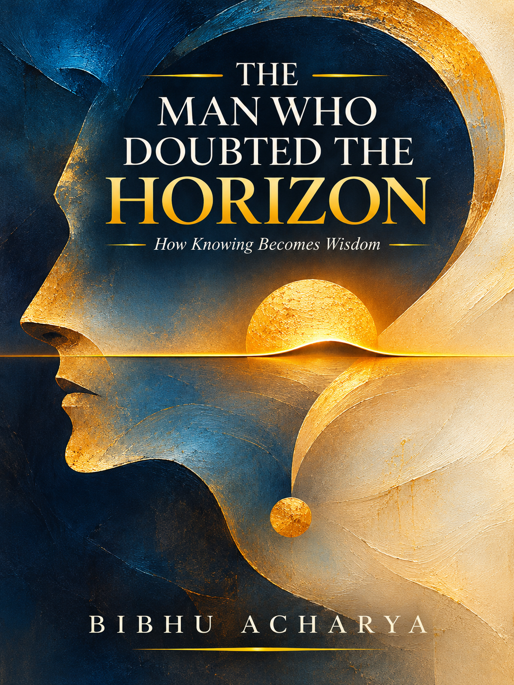

Forthcoming literary work · Bibhu Acharya
The Man Who Doubted the Horizon
How Knowing Becomes Wisdom
Three visual concepts for the forthcoming book. Select any cover to view the original image at full resolution.

Publication status: Forthcoming. Cover concepts are presented for exploration; no final cover selection is implied.